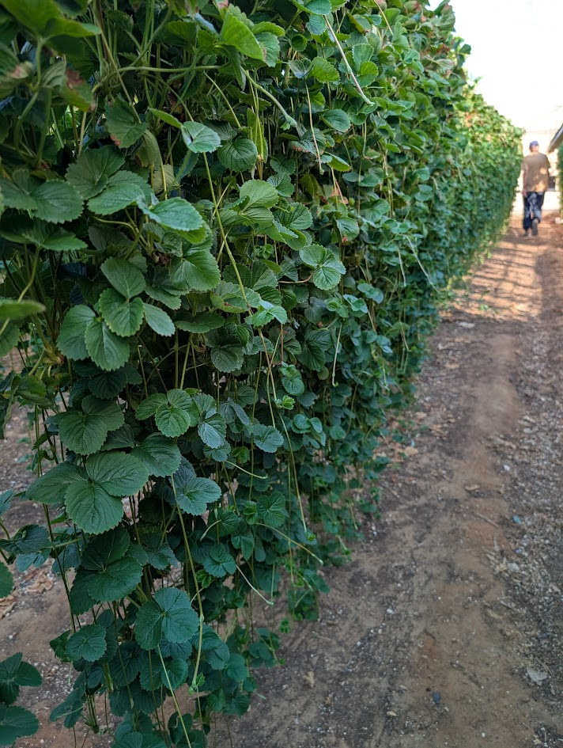
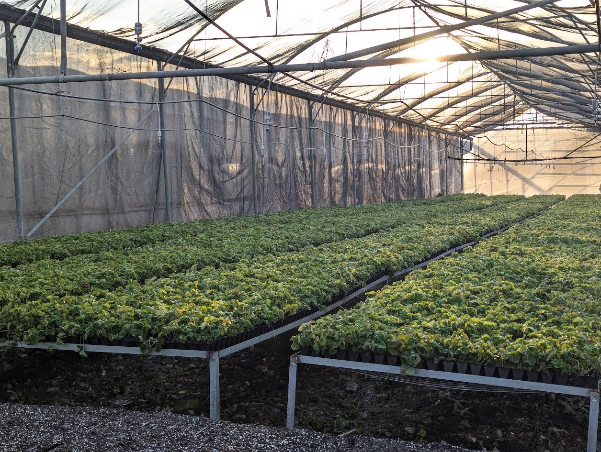

פיתוח זנים
מה שעובד בקרקע לא תמיד עובד במצע. אנחנו בוחנים זנים בתנאים שלנו.
מהניסוי למגדל
בחירה
מועמדים שמתאימים לאזורי הגידול שלנו.
ניסוי
שתילה לצד זן ביקורת, באותה השקיה ודישון.
מדידה
יבול, גודל פרי, בריקס, עמידות בהובלה ורגישות למחלות.
השמה
מה שעבר נכנס למשתלה, עם הנתונים שמאחוריו.

